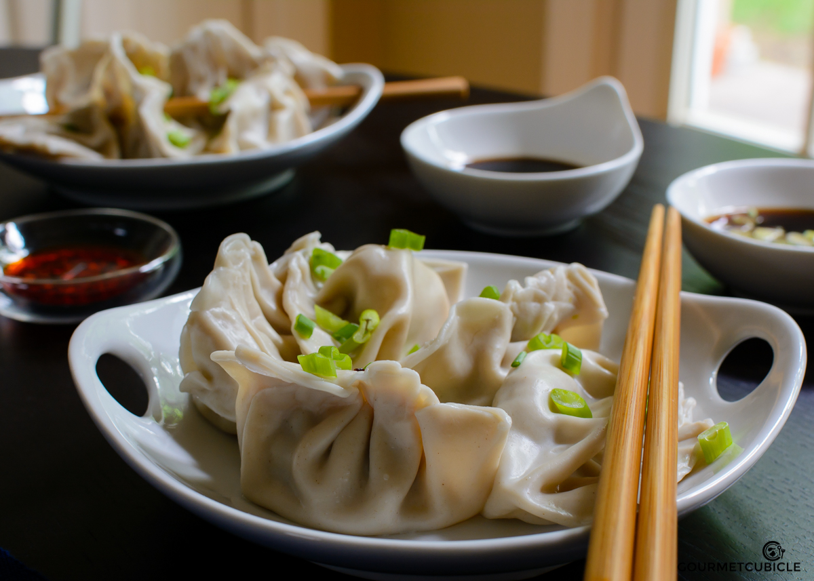

01
Jiaozi
Dumplings. Traditionally Made For Lunar New Year.

Ingredients
- All-purpose flour
- Water
- Ground meat (pork, beef, or chicken)
- Cabbage or Chinese chives
- Scallions
- Ginger
- Soy sauce
- Sesame oil
- Salt
- Pepper
Equipement
- Mixing bowl
- Rolling pin
- Knife
- Cutting board
- Pot (for boiling)
- Pan or steamer
About
This savory dish is soft, comforting, and often shared with family to welcome the new year together.